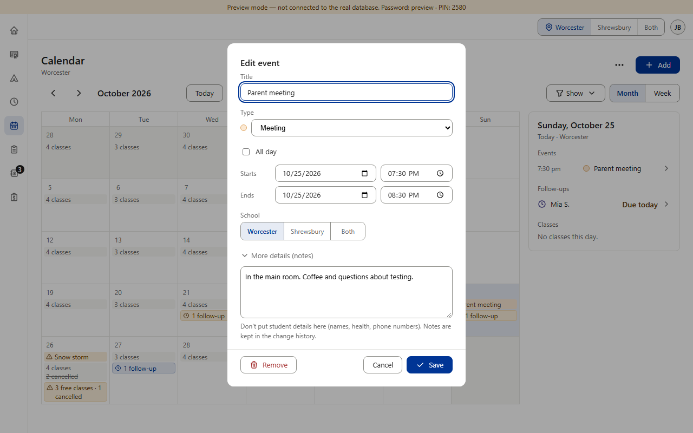
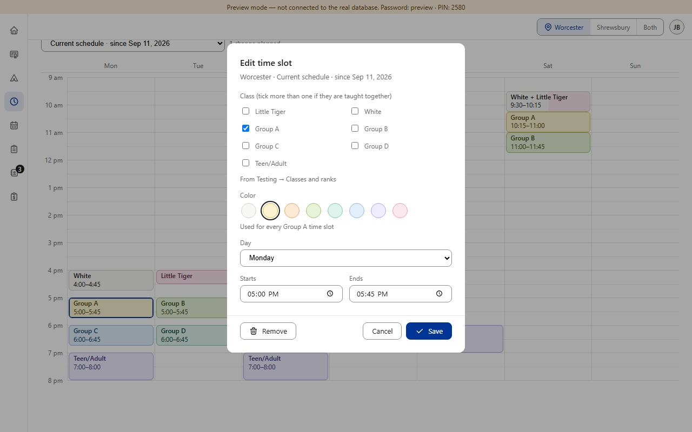

Found by the rulebook-rows review; for the new-students prompt and §7's wording. The Calendar's Remove (an event or a closure) and the Schedule's Remove (a time slot) are red, act at once and offer a 5-second Undo (v0.233, v0.234) — after that the item is gone: there is no Removed list to bring it back from. Item 7 made red mean “gone for good” and kept Withdraw plain because Restore brings the person back later. The rows' new §7 sentence (“never Withdraw or other reversible removals”) reads as if these three turn plain — the question is which way to word it. Red that isn't in question (it asks first, nothing comes back): deleting an event type, a planned schedule, a prospect. (Preview screenshots · PC size · fake data)

